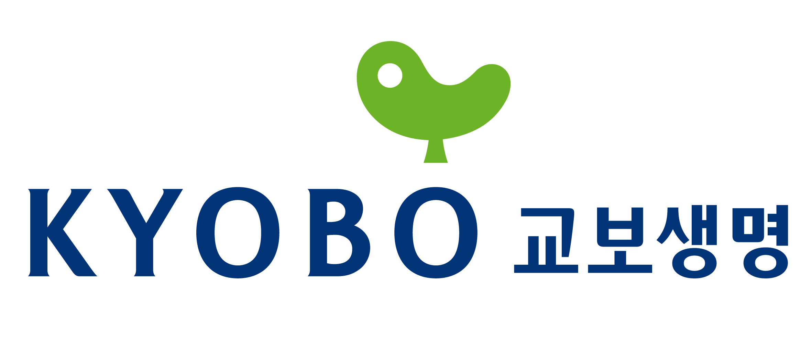

<!DOCTYPE html>
<html lang="en">
<head>
  <meta charset="UTF-8">
  <meta name="viewport" content="width=device-width, initial-scale=1.0">
  <title>Teamirum's Recommendation✨</title>

  <!-- Google Fonts -->
  <link rel="preconnect" href="https://fonts.gstatic.com/" crossorigin="">
  <link href="https://fonts.googleapis.com/css2?family=Noto+Sans:wght@400;500;700;900&display=swap" rel="stylesheet">

  <!-- Bootstrap CSS -->
  <link href="https://cdn.jsdelivr.net/npm/bootstrap@5.3.0/dist/css/bootstrap.min.css" rel="stylesheet">

  <!-- Custom CSS -->
  <link rel="stylesheet" href="../assets/css/common_style.css">
  <link rel="stylesheet" href="../assets/css/2.info_form_style.css">
</head>

<body>
  <!-- 네비게이션 바 -->
  <nav class="navbar">
    <a href="1.main.html" class="logo-container">
        
    </a>
  </nav> 

  <!-- 추천 결과 -->
  <main id="recommendation-container">
    <br>
    <!-- JavaScript에서 동적으로 추가 -->
  </main>

  <!-- Footer -->
<footer class="footer">
  <div class="footer-content">
    <!-- <div class="footer-logo">
      Footer 로고
      
    </div> -->
    <div class="footer-highlight">
      <!-- 설명 텍스트 -->
      <p class="footer-description">
        팀이룸에서는 <span class="highlight-blue">4개의 보험사, 40여개의 상품</span>을 
        <span class="highlight-black">맞춤형으로 추천</span>받아보고 
        <span class="highlight-black">시뮬레이션</span> 돌려볼 수 있습니다.
      </p>
      <!-- 회사 로고들 -->
      <div class="insurance-logos">
        
          
          
          
      </div>
    </div>
    <!-- Footer 정보 -->
    <div class="footer-info">
      <p>
        1. 본 광고는 광고심의기준을 준수하였으며 유효기간은 심의일로부터 1년입니다.<br>
        2. 보험계약자가 기존 보험계약을 해지하고 새로운 보험계약을 체결하는 과정에서<br>
        ① 질병이력, 연령증가 등으로 가입이 거절되거나 보험료가 인상될 수 있습니다.<br>
        ② 가입 상품에 따라 새로운 면책기간 적용 및 보장 제한 등 기타 불이익이 발생할 수 있습니다.<br>
        3. 금융소비자보호총괄책임자 심의필 제2024-07-01 (2024.07.17∼2025.07.16)
      </p>
    </div>
  </div>
</footer>

  <!-- JavaScript -->
  <script src="../assets/js/3.rec.js"></script>
</body>
